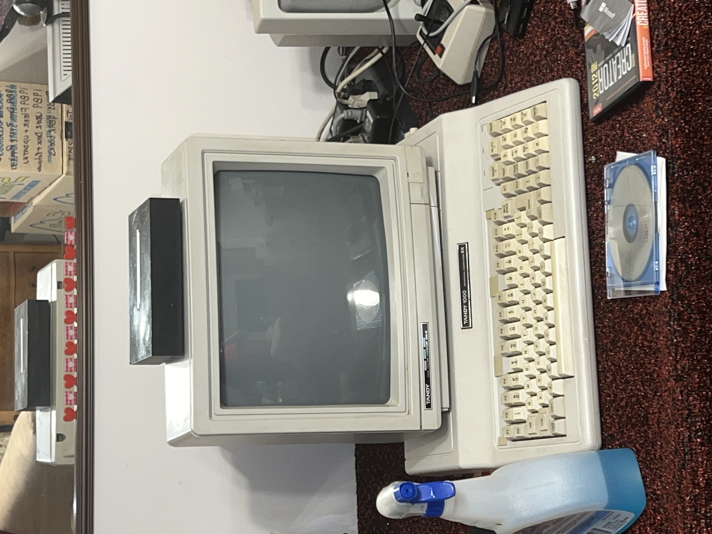
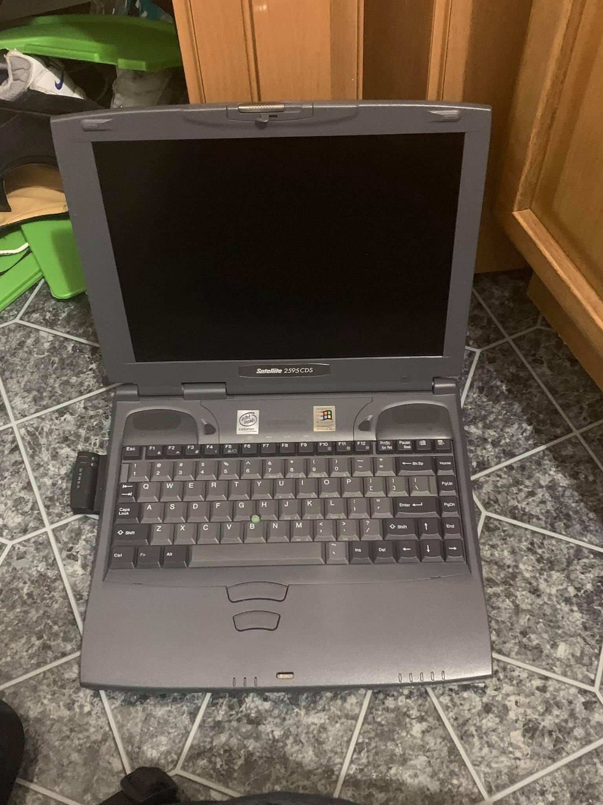
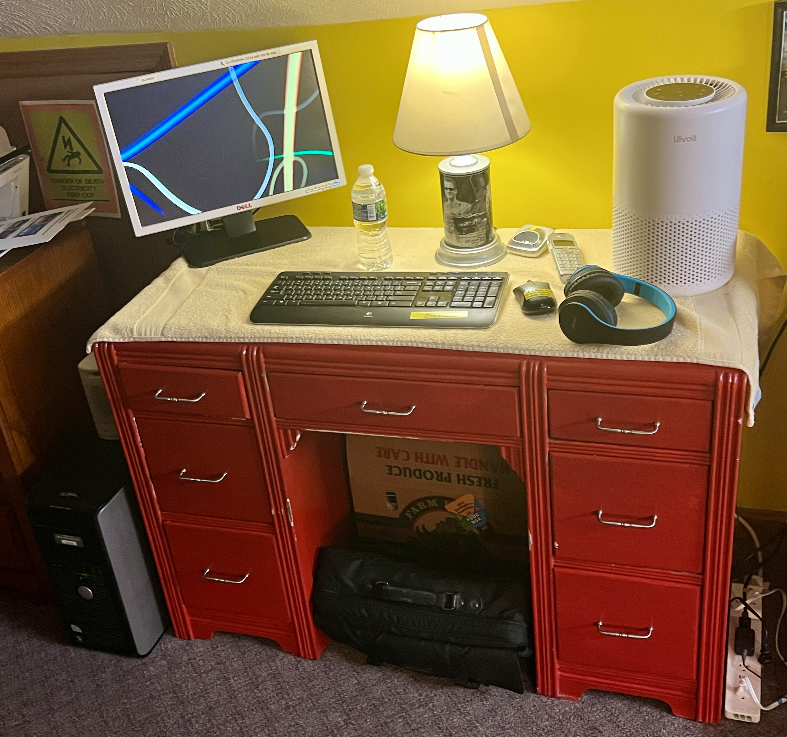

Computers
Computers - I have had my own computer since I was only 5 years old back between late 1999 or early 2000.
- We have 23 working computers inside our house now plus 1 computer that we are using for parts.
- We had 6 computers which were recycled at Best Buy, because they were broken.
- The oldest working computer inside our house is a 1986 era Tandy 1000 EX and it is almost 40 years old and it still works.
- The newest working computer inside our house is a 2023 era HP gaming laptop which is my dad's new laptop.
| Number | Year | Model |
|---|---|---|
| 1 | 1985 | Tandy 1000 EX |
| 2 | 1999 | Toshiba Satellite 2595CDs |
| 3 | 2000 | Custom Built PC - (Pentium III) - (533 MHz) |
| 4 | 2004 | Dell OptiPlex GX280 |
| 5 | 2006 | Dell Dimension E310 |
| 6 | 2008 | Dell Inspiron 1720 (Blue) |
| 7 | 2008 | Dell Inspiron 1720 (Red) |
| 8 | 2009 | Dell Inspiron 1750 (Yellow) |
| 9 | 2010 | Compaq Presario CQ56 | 10 | 2011 | Dell OptiPlex 380 |
| 11 | 2012 | Dell Inspiron 14R N4110 |
| 12 | 2013 | Dell Inspiron 7720 Special Edition |
| 13 | 2013 | Gateway NE71B |
| 14 | 2015 | Asus ROG G751JL |
| 15 | 2016 | HP Stream - 14-ax010wn |
| 16 | 2016 | Dell Inspiron 5555 |
| 17 | 2019 | MacBook Air |
| 18 | 2020 | Dell Inspiron 3593 |
| 19 | 2020 | Dell Inspiron 3793 |
| 20 | 2020 | HP OMEN 30L Desktop - GT13-0014 |
| 21 | 2022 | MacBook Air |
| 22 | 2023 | PowerSpec B750 |
| 23 | 2023 | OMEN 17.3 inch Gaming Laptop PC 17-ck1000 - (509V8AV) |



Abilities Richmond
831 N E Street,
Richmond, IN 47374
765-966-0066 765-966-0066